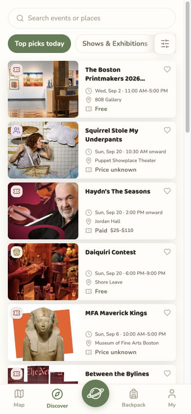
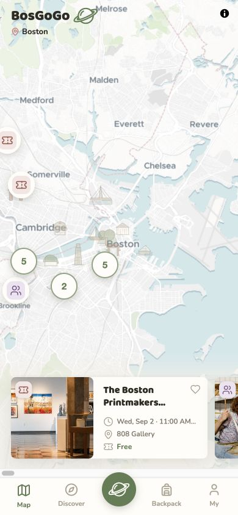
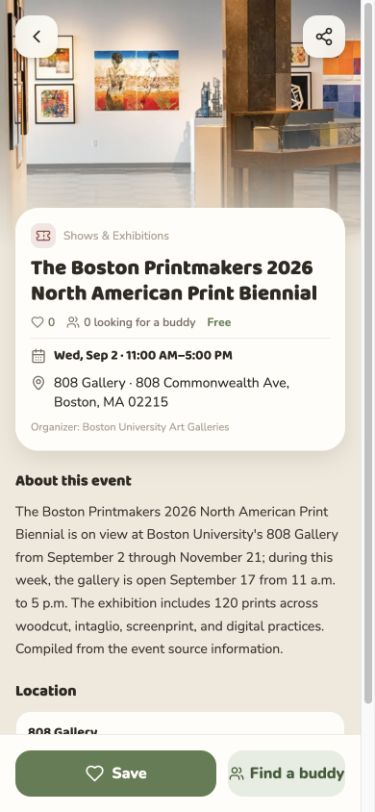
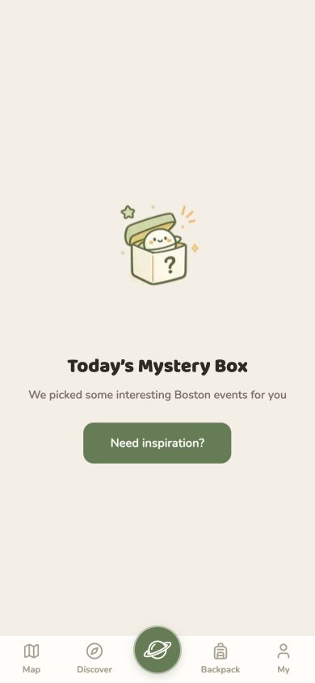
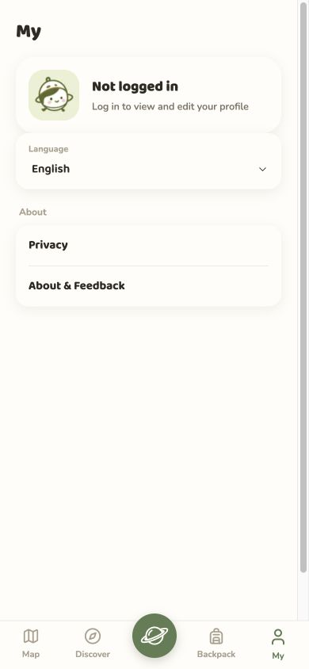

Product framing
Translate a city-life question into a focused discovery experience built around place, time and relevance.
A little less searching.
A little more city.



Events, exhibitions, markets and neighbourhood activities are spread across venue websites, social feeds and newsletters. Finding something to do often means piecing together where it is, when it happens and whether it fits the day.
BosGoGo brings these fragments into a map-first experience for Boston. It connects nearby activities, comparable event information and a save flow, turning scattered possibilities into a personal plan.
Translate a city-life question into a focused discovery experience built around place, time and relevance.
Connect geographic exploration, activity browsing and saved possibilities in one product structure.
Organize the details that help someone compare an activity, understand it and take a next step.
Map and discovery screens
Event detail and save action
Surprise and profile screens
Establish a consistent language for map signals, activity cards, navigation and primary actions.
The challenge is not just finding more events. It is making the next decision easier.
Venue names alone do not show how an activity fits into a day in the city.
Place activities in their geographic context, with nearby options visible together.
Timing, cost and category can be hard to compare across different sources.
Bring the image, time, venue and price into a consistent activity card.
An interesting activity can disappear into an open tab or a forgotten screenshot.
A save action connects discovery with the Backpack destination.
The map makes the city the starting point. Activity clusters and recommendations connect the overview of Boston with a specific place to go.
Each view has a distinct job: orient, compare, understand, explore or return.
A geographic overview reveals where activities sit relative to one another. The recommendation card connects that overview to an individual event.
A repeatable activity card makes unlike events easier to scan. Images establish interest; time, place and cost support the comparison.
The event page brings practical information together with a fuller description. A persistent save action keeps the next step within reach.
The mystery-box direction offers an alternative to deliberate browsing: a playful starting point when the user has no specific activity in mind.

The profile completes the navigation structure alongside Map, Discover, Surprise and Backpack, giving personal settings and account context a distinct destination.

Start with the city.
Find a relevant activity.
Read the essentials.
Keep a future possibility.
The interface uses soft surfaces and a restrained green action colour. Images carry the variety of city life; recurring patterns keep decisions consistent.
Map, Discover, Surprise, Backpack and My remain consistent across the experience.
A strong title and compact practical details support a quick first judgement.
Green distinguishes the primary save action from the supporting social action.
The current work establishes the product direction and interface prototype. The next questions concern usefulness in real city-life decisions.
Urban observation,
translated into an everyday interface.